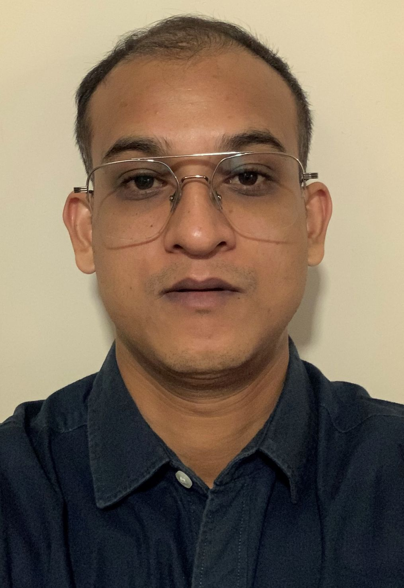

Assistant Professor in Electrical and Electronics Engineering (EEE) at BITS Pilani Hyderabad Campus. PhD in Control Systems with 3+ years of Automotive Research & Development experience. Research interests include Real-Time Controller Design, Autonomous Vehicle Systems, Applied Machine Learning, Deep Learning and Robotics.
Download CV Contact Me
Dr. Ariful Mashud is an Assistant Professor in the Department of Electrical and Electronics Engineering (EEE) at BITS Pilani Hyderabad Campus. He holds a Ph.D. in Control Systems and has over 3 years of industrial experience in Automotive Research and Development, specializing in advanced steering systems, vehicle dynamics, and intelligent control technologies. Prior to joining academia, he worked as a Senior R&D Engineer in the automotive industry, contributing to the development of Electric Power Steering (EPS), Steer-by-Wire (SbW) systems, vehicle dynamics control, and machine learning-based control solutions for next-generation mobility applications.
Dr. Mashud's research focuses on integrating advanced control theory, machine learning, and embedded intelligence to develop reliable, safe, and autonomous systems for future mobility and industrial automation. He has authored multiple peer-reviewed publications, contributed to patented technologies, and actively collaborates on interdisciplinary research at the intersection of control engineering, artificial intelligence, and autonomous transportation.
Robust Controller Design, Sliding Mode Control, System Verification, Real Time Stability Analysis
ADAS, End-to End Autonomous Driving, Behavioral Cloning, Semantic Segmentation, Advanced Steering Control
Predictive Analytics, Intelligent Control
Neural Networks, Computer Vision, AI
Steering Systems, Motion Control, Stability
Integration of lateral and longitudinal vehicular PID control in CARLA
TensorFlow Lite for Microcontrollers (TFLM) for object detection
Developed advanced robust control algorithms for dynamic systems.
Department of Electrical and Electronics Engineering
BITS Pilani Hyderabad Campus
2026 – Present
Automotive Research & Development
2022 – 2026
Electric Power Steering (EPS), Steer-by-Wire (SbW), Vehicle Dynamics, Neural Network-Based Controllers
Email: ariful.mashud@pilani.bits-pilani.ac.in
Google Scholar: View Profile
GitHub: Ariful123Mashud
Phone: +91 86309 6653